Before You Begin
Open Windows Fingerprint Settings
In the Windows taskbar search box, type fingerprint.
Select Set up fingerprint sign-in from the search results.
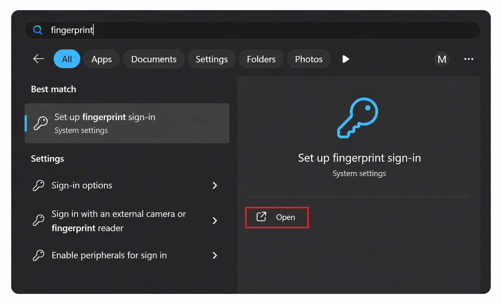
Salford City Council IT Services
Follow this guide to set up fingerprint sign-in, MFA and PIN access on your SCC Windows 11 laptop.
In the Windows taskbar search box, type fingerprint.
Select Set up fingerprint sign-in from the search results.

Part 1
The fingerprint sensor is located on the laptop power button. Do not press firmly. Lightly rest or tap your finger on the sensor when prompted.
The Sign-in options page will open.
Select Fingerprint recognition (Windows Hello).
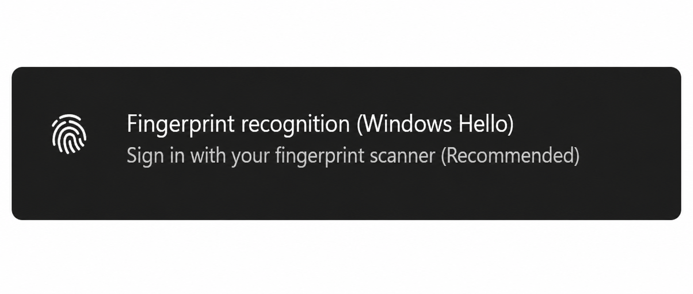
When prompted, select Yes, set up to begin fingerprint enrolment.
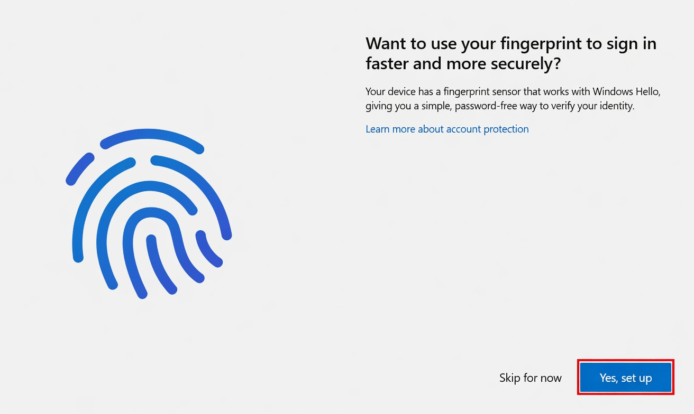
Place your finger on the fingerprint sensor. Lift and place your finger back several times, moving it slightly between scans.
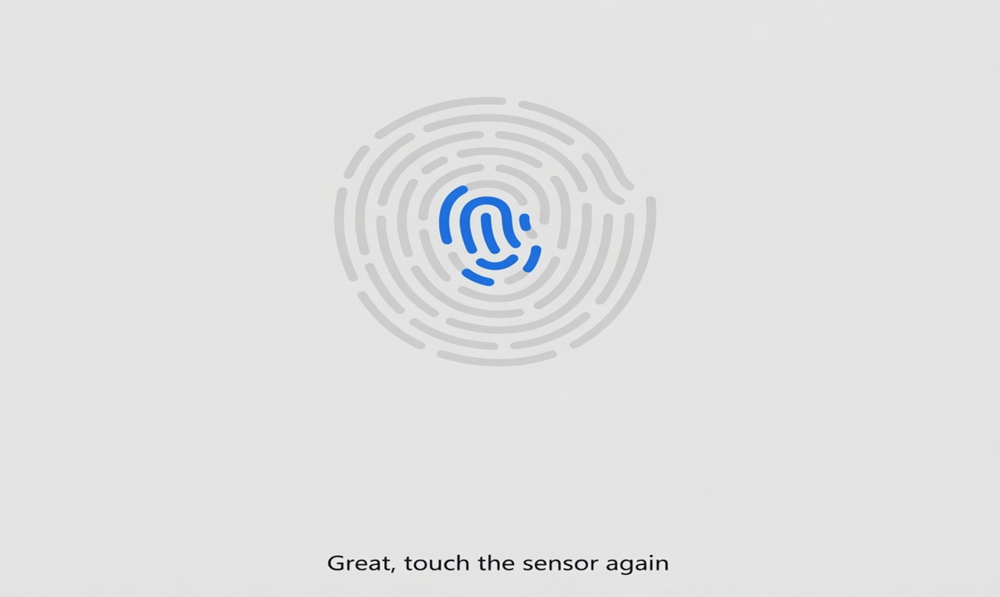
Once Windows has captured your fingerprint, select Next.
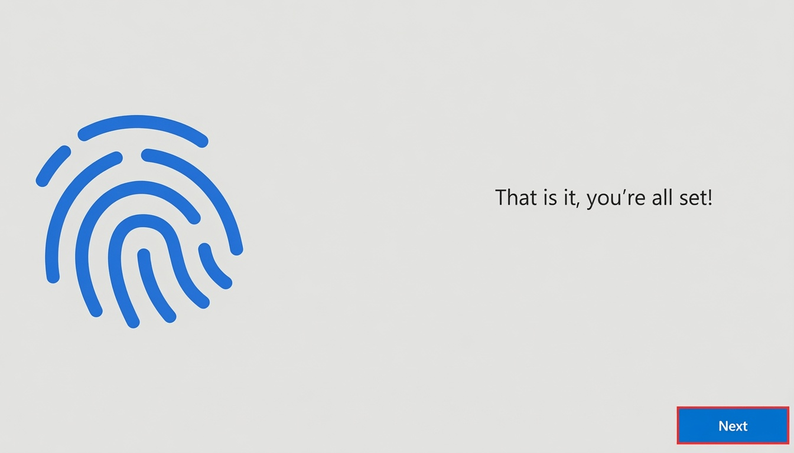
Part 2
After signing in to your SCC account, you may see More information required.
Select Next to begin setting up your security information.
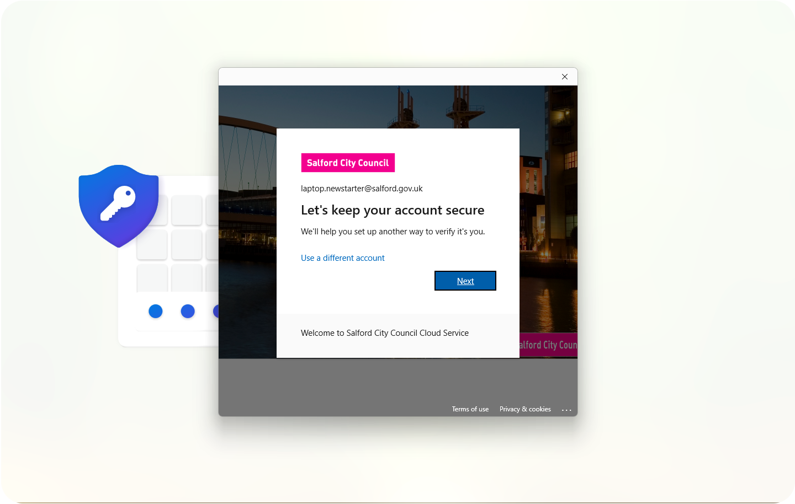
Download and install the Microsoft Authenticator app on your mobile phone.
Once installed, select Next on your laptop.
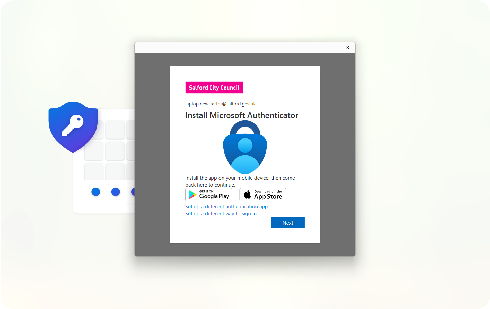
Open Microsoft Authenticator on your phone.
Select Add account, then choose Work or school account.

A QR code will appear on your laptop screen. Use Microsoft Authenticator to scan it.
If prompted, allow the app to access your camera.
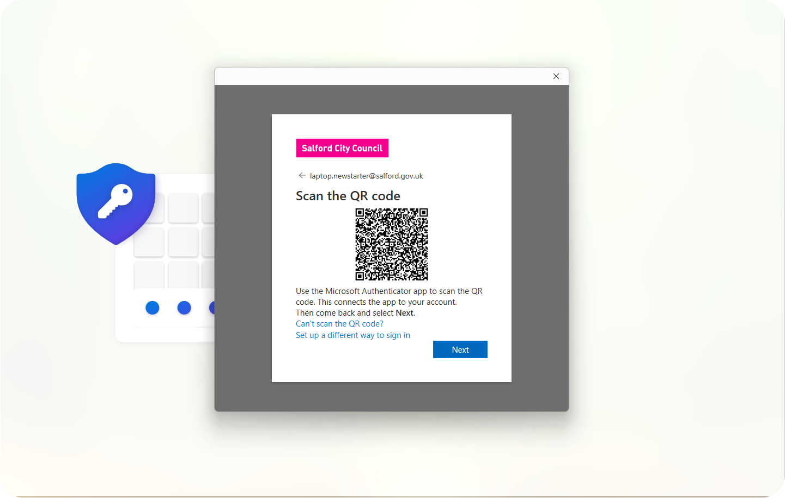
Microsoft will send a test notification to the Authenticator app on your phone.
Select Next to send the notification.
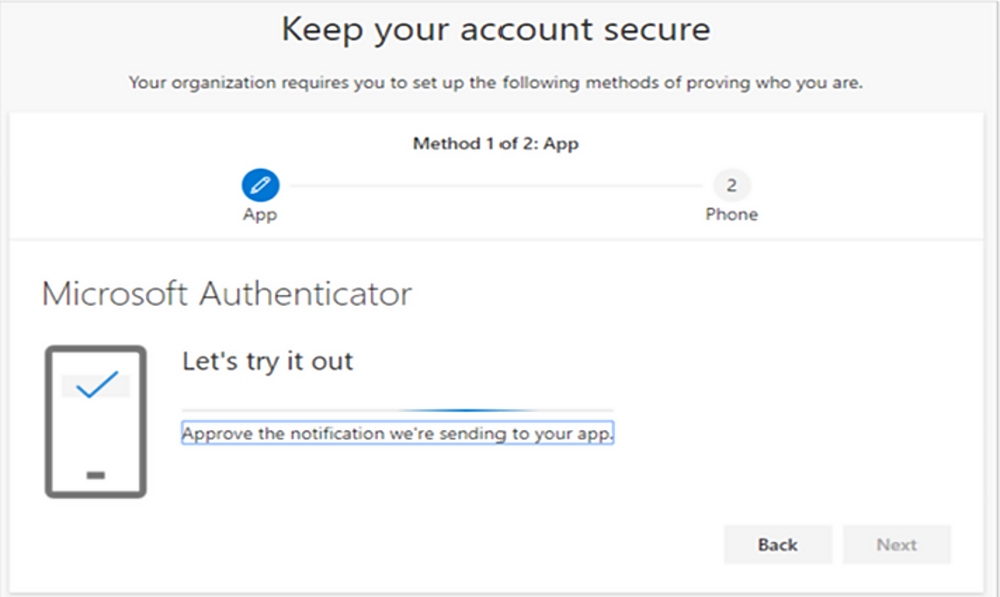
Open Microsoft Authenticator and type in the number displayed on your laptop screen.
Select Next to continue.
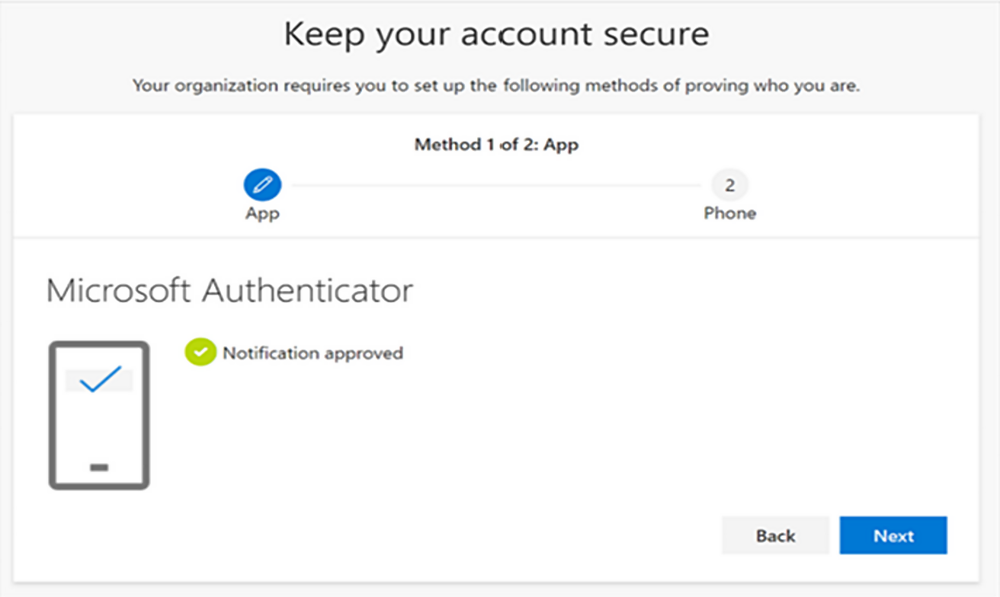
You will be asked to configure a backup verification method.
This can be used if Microsoft Authenticator is unavailable, for example if you change phones or cannot access the app.
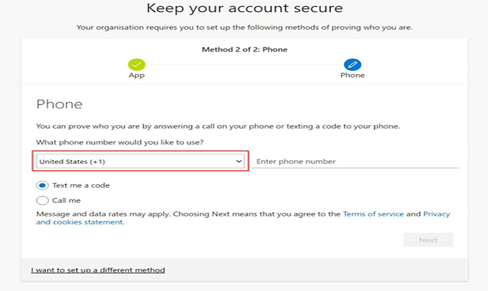
Change the country code from United States (+1) to United Kingdom (+44).
Enter your mobile number, select Text me a code, then select Next.
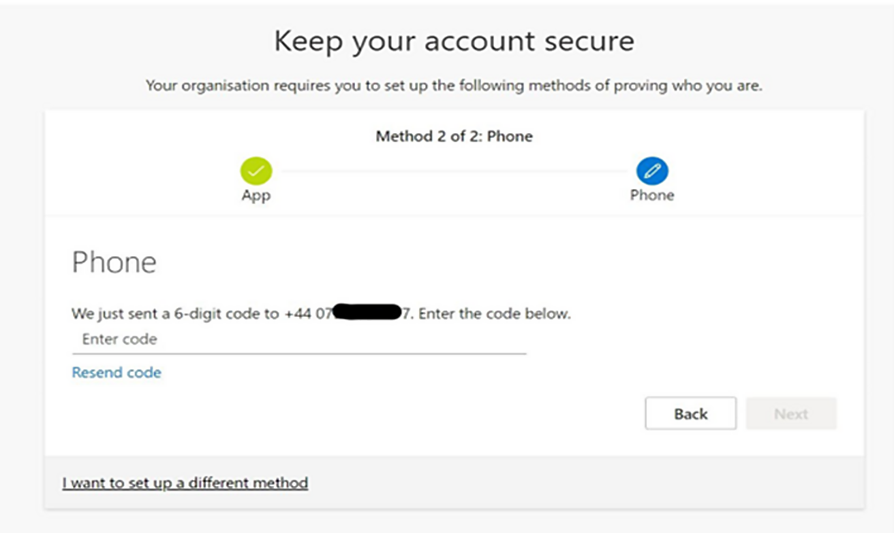
A verification code will be sent to your phone.
Enter the code and select Next.

Once verification has completed successfully, select Done.
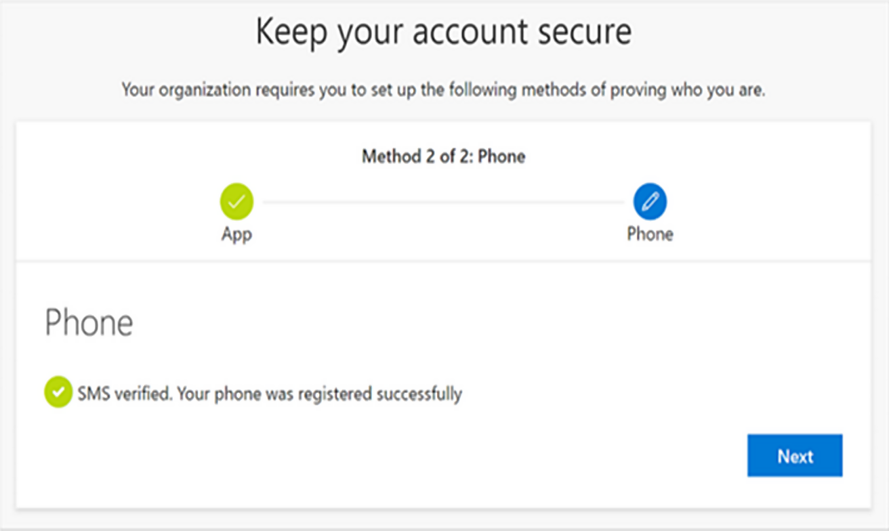
Part 3
If prompted, select Next to create your Windows Hello PIN.
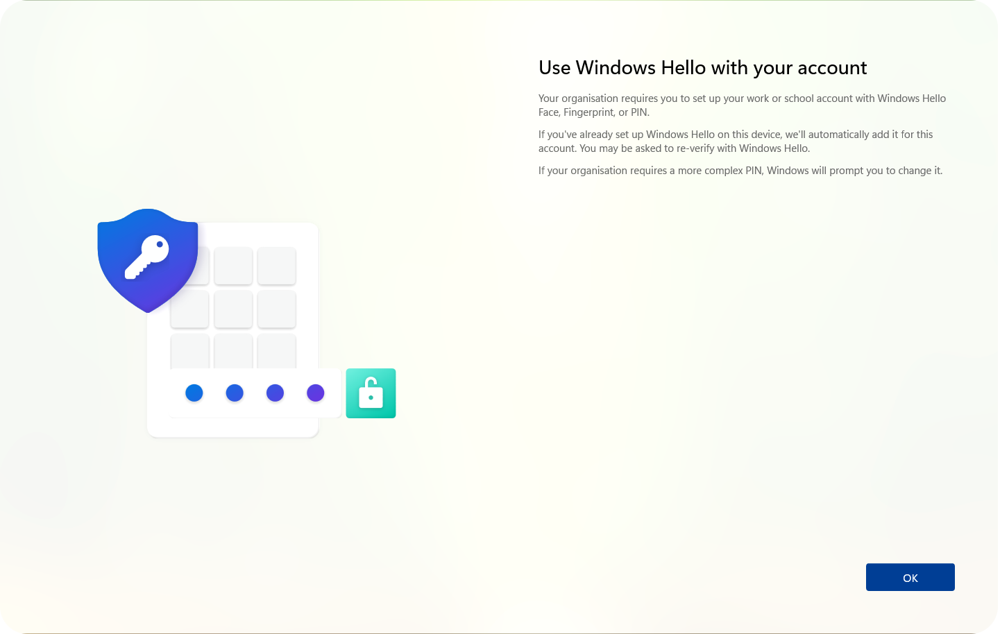
Enter your chosen PIN and then enter it again to confirm.
Your PIN must contain at least 6 numbers. Avoid birthdays or simple sequences. Never share your PIN with anyone.
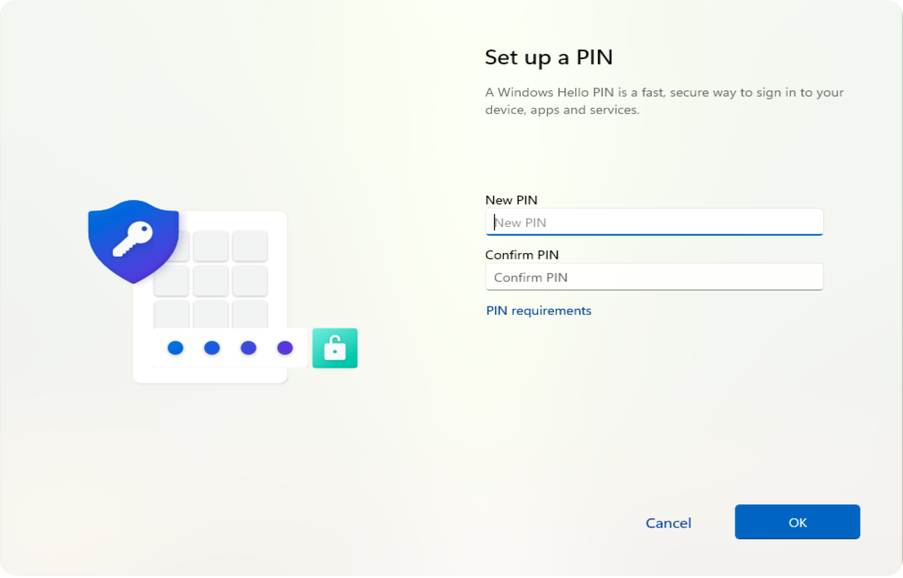
Select OK to save your PIN.
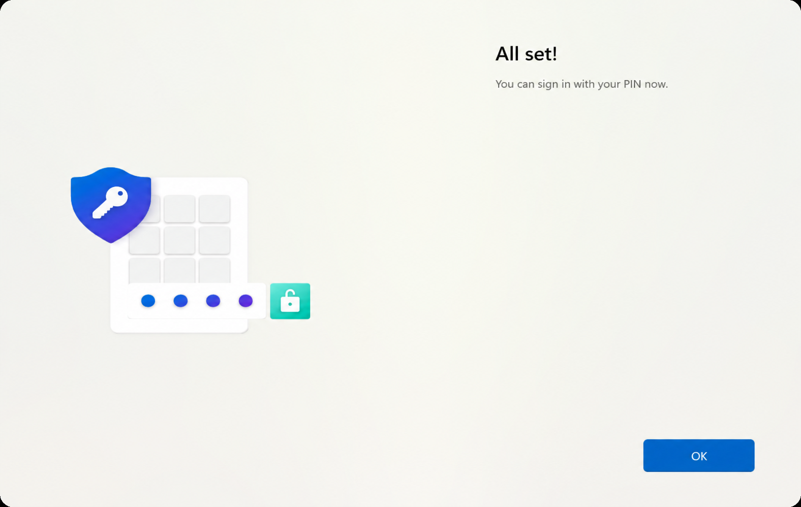
Your SCC account is now secured using Fingerprint Sign-In, Multi-Factor Authentication and PIN Sign-In.
If you experience any issues during setup, please contact IT Support.